2-fach vertikales Liniendiagramm
Vertical-2-Panel
Zusammenfassung
Dieses Tutorial erläutert. wie zwei Diagramme zusammengefügt und benutzerdefiniert angepasst werden.
- 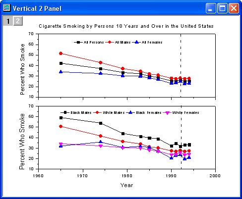
Origin-Version mind. erforderlich: Origin 2015 SR0
Was Sie lernen werden
In diesem Tutorial lernen Sie, wie Sie:
- Diagrammfenster zusammenfügen.
- Diagrammachsen nach dem Zusammenfügen benutzerdefiniert anpassen.
- ein Diagrammdesign anwenden.
Schritte
- Öffnen Sie ein leeres Arbeitsblatt. Wählen Sie Hilfe: Ordner öffnen: Sample-Ordner ... im Menü, um den Ordner "Samples" zu öffnen. Öffnen Sie in diesem Ordner den Unterordner Graphing. Dort befindet sich die Datei Vertical_2_Panel_Line.txt. Ziehen Sie diese Datei per Drag&Drop in das leere Arbeitsblatt, um sie zu importieren.
- 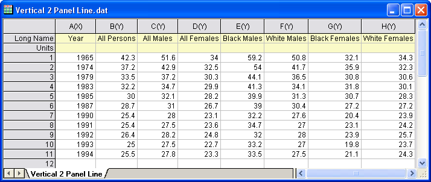
- Markieren Sie Spalte 2 bis Spalte 4, wählen Sie Zeichnen > Einfache 2D: Punkt-Liniendiagramm oder klicken Sie auf die Schaltfläche Punkt-Liniendiagramm auf der Symbolleiste 2D Grafiken.
- 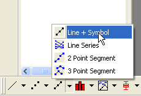
- Das folgende Diagramm wird erstellt:
- 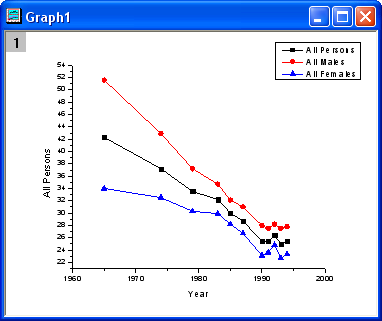
- Gehen Sie zurück zum Arbeitsblatt. Markieren Sie die Spalten 5 bis 8 und klicken Sie dann auf die Schaltfläche Punkt-Liniendiagramm auf der Symbolleiste 2D-Grafiken, um ein neues Diagramm zu erstellen.
- 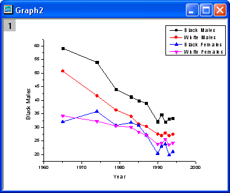
- Um zwei Diagramme zusammenzufügen, wählen Sie Grafik: Grafikfenster zusammenfügen im Menü. Übernehmen Sie die Standardeinstellungen und klicken Sie auf OK. Die zwei Diagramme werden in einem Fenster zusammengefügt:
- 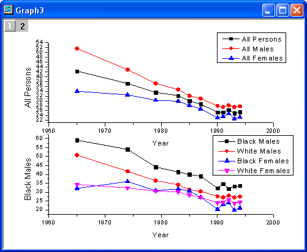
- Stellen Sie sicher, dass Layer 1 oben links im Diagramm ausgewählt ist, und klicken Sie doppelt auf die Y-Achse von Layer 1, um den Dialog Achsen zu öffnen. Legen Sie auf der Registerkarte Skalierung die Dialogoptionen fest, wie unten zu sehen:
- 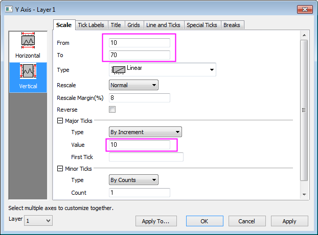
- Klicken Sie auf das Symbol Horizontal im linken Bedienfeld. Gehen Sie zur Registerkarte Beschriftung der Hilfsstriche, deaktivieren Sie das Kontrollkästchen Zeigen, um die Hilfsstrichsbeschriftungen in Layer 1 auszublenden, und klicken Sie auf OK, um die Einstellungen anzuwenden.
- 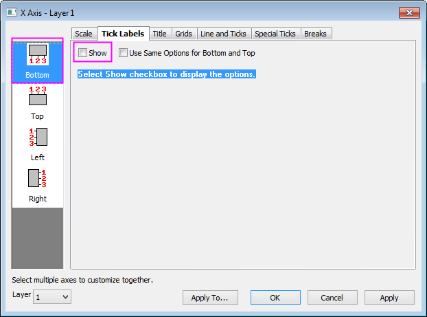
- Löschen Sie den Titel der X-Achse in Layer 1. Legen Sie die gleiche Skalierung für die Y-Achse von Layer 2 fest. Das Diagramm sollte jetzt folgendermaßen aussehen.
- 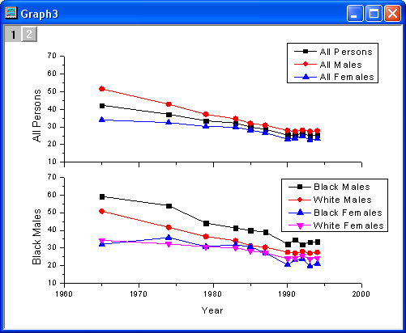
- Wenden Sie jetzt ein Design an, um eine obere X-Achse und eine rechte Y-Achse hinzuzufügen. Wählen Sie Einstellungen: Designs verwalten im Menü, um den Dialog Designs verwalten zu öffnen. Aktivieren Sie die Registerkarte Diagramm und wählen Sie Opposite Lines aus der Tabelle. Klicken Sie dann auf die Schaltfläche Jetzt anwenden. Klicken Sie dann auf die Schaltfläche Schließen, um den Dialog zu schließen.
- 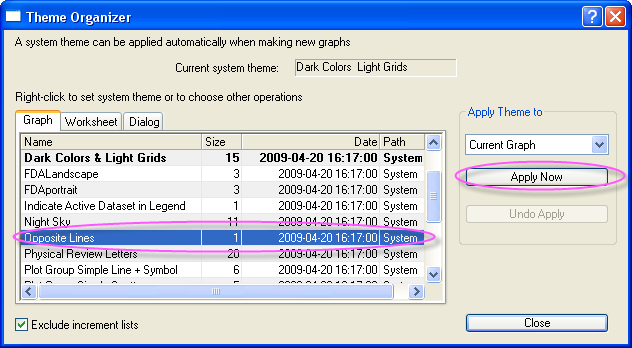
- Markieren Sie die Legende von Layer1, klicken Sie mit der rechten Maustaste darauf und wählen Sie Einstellungen im Kontextmenü. Legen Sie die Dialogoptionen, wie unten gezeigt, fest:
- 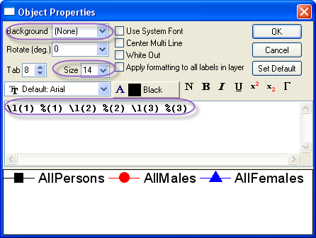
- Verschieben Sie die Legende dann an die gewünschte Position.
- Klicken Sie auf die Schaltfläche Linie auf der Symbolleiste Hilfsmittel und zeichnen Sie eine Linie auf dem Layer 1, wie im Beispielbild gezeigt. Halten Sie die Shift-Taste während des Zeichnens gedrückt, um sicherzustellen, dass die Linie vertikal ist. Klicken Sie doppelt auf die Linie, um den Dialog Eigenschaften des Linienobjekts zu öffnen. Wählen Sie auf der Registerkarte Linie die Option Striche in der Auswahlliste Typ und geben Sie 2 im Bearbeitungsfeld Breite ein. Klicken Sie auf die Registerkarte Dimensionen. Aktivieren Sie die Kontrollkästchen Horizontale Bewegung und Vertikale Bewegung. Klicken Sie zum Fertigstellen auf die Schaltfläche OK.
- Wiederholen Sie Schritte 8-9 für Layer 2.
- Klicken Sie auf die Schaltfläche Text auf der Symbolleiste Hilfsmittel. Klicken Sie dann in die Mitte des Diagramms und geben Sie den Text Cigarette Smoking by Persons 18 Years and Over in the United States ein, um einen Titel für das Diagramm hinzuzufügen. Klicken Sie doppelt auf den Titel der Y-Achse von Layer 1 und Layer 2 und geben Sie dann Percent Who Smoke ein.
- Das Diagramm sollte am Ende folgendermaßen aussehen: